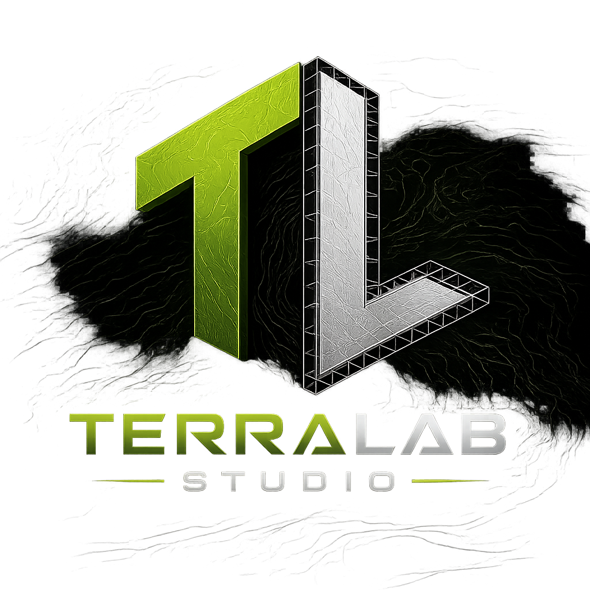

Professional Terrain Production Software
Create Terrain. Not Workflow.
TerraLab Studio is a terrain production suite built to bring terrain editing, texture painting, materials, and live 2D/3D workflows into one focused application.
Currently in Active Development